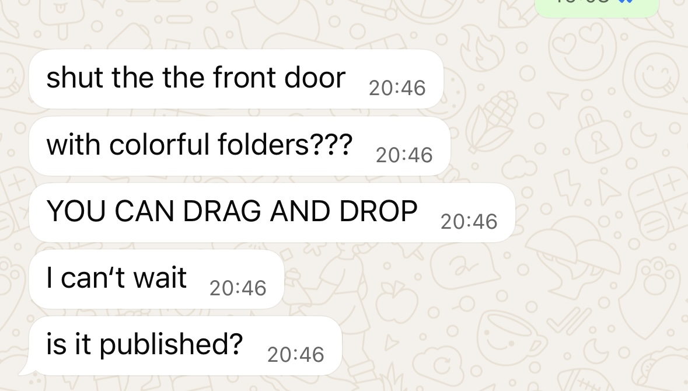

My birthday was 2 days ago so as usual im questioning my whole fucking existence. there's different things I want to do, or finally do, and I look at myself and I'm like wtf am I doing you know? There's different things I say I want to do but when the time finally comes around I'm not really getting to it. What the fuck? My lifes fucking great to be honest I'm in paris right now I've been eating good ass food and have expositions planned so shits going to be great. But I feel like I'm losing my mind whether it be structure or whatever, and even though I'm studying art no one here is going to be holding my hand and telling me what I need to do and shit so I just need to fucking do it, even though I'm not sure whatever the fuck it is. where the fuck is my math teacher yelling at me for not doing my homework when I really need it? and the way I think my mind works is I start doing something and It's telling me to do 4 other things at the same time, I have 9 fucking Microsoft word documents all on different things, looking at it from an outer perspective I'm like what the actual fuck ? and there's already a writing I wanted to put on here but I haven't already and I just stare at it, wondering if it's the right move or not but at the same time since I'm just fucking staring at it and staring at all these 9 other documents and whatever idea of project I want to do, I stay in the whole “conception” of it al instead of all the movement and I think that's getting to me. So you know what this might not make much fucking sense but I think I needed to write something so I'm gonna put it on the site, I'm trying to do so much fucking shit and I don't know where to start so I think I just need to start and I think this is a thought I have every day and everyday I think I understand it different but clarity isn't action so fucking here we are sorry mom for all the times I said fuck I just feel very passionately about this and it felt very fucking appropriate TIME TO UPLOAD THIS BEFORE I START QUESTIONING IT and now this cycle has gotten so bad that I don't even want to mention projects that are on-going because what if I'm just like mmmmm? you know? so fuck it I'm not sure if I should mention everything or nothign but come back in a little bit to this site or instagram (if I dont end up deleting it) and look at whats been going on much love to everyone my days actually been really fucking good I just had that in my mind oh AND i may not have my math teacher but I recommend joey diaz yelling at you and for that extra sauce of motivation if once you're moving may I suggest the german ww2 soldier making sure you study
this started 4 weeks ago in a class of problématiques numériques, we had to choose a project and I thought about making a website.
i've been working on it every week, and now the site is almost done and now I'm wondering why I chose to do this in the first place.
i have a tendency to sometimes start things and not finish. I always try to do things I truly want, which is great because it leads me to doing
a bunch of creative projects and other fun shit, but now it's like I don't really want to finish this site, and it's hard to project myself
and imagining it be done. I And then I think I might as well do it for "me" 4 weeks ago, no? I don't know, it's a monday and
I'm rethinking my whole life. I feel like I don't have enough time to do everything I want, and now I'm seeing if I can study
psychology on the side. That sounds like a huge contradiction, and maybe it is but it kind of makes sense.
okay I just put on innerbloom. now I really want to finish this site and publish. I'm going to start publically showing my work more.
that's a big reason as to why I decided to make this. also I've always wanted a place to yap about whatever. I can technically do that anywhere okay
but I just found a reason to finish the site so keep it to yourself. you know what I just realized? my friends say I don't publish what I do, I don't share it.
and now I'm thinking, I'm an artist in 2025 and I'm not putting my shit out there? isn't that fucking crazy? i'm gonna say that again because I need to read it again, isn't
that fucking crazy? borderline delusional. AND NOT IN THE GOOD KIND. anyways damn, it's monday morning and I have the sun to chase.
I take way too long to do small ass tasks. I take a while to reply to messages and I'm not really sure why. but you know what I realize? since I take time
to establish the foundation of the project, it has its legimate reason to exist. and you know rwhat, I'm listening to "la mente vola" and I'm realizing I'm going to live
in the world I will have created. isn't that super fucking cool? I'm creating my paradise, and Headache says if you want to know how paradise really feels, you have to try
somehow to be a little like a god. that's my mantra today. I can control my thoughts, I can shape my future and I can create the world
I will live in. this is when I realize, I'm already living in it. until death all defeat is psychological. it's time to get up and live. "Shoot for the stars, so if you fall you land on a cloud",
I love that but now I'm going to forget the possiblity of landing on the cloud, my target is fixed and now with direction. in attempt to be more precise and direct, nothing too crazy,
I announce that I am now chasing the sun.

JOYCE THANK YOU FOR THE SUPPORT.